Co-op Mutators List: Names, Icons, Descriptions and Mechanics
Sections on this Page

Safety Zones
Certain mutators create environmental hazards that can impact/debuff player units, including workers. These mutators get deactivated in areas called "Safety Zones". All player bases and expansions are considered Safety Zones. The mutators that obey the Safety Zone rules are as follows:
- Blizzard
- Going Nuclear*
- Lava Burst
- Orbital Strike
- Purifier Beam
- Temporal Field
- Time Warp
- Twister
*The centers of the nukes will not be placed inside the safety zones. However, nukes can still damage units inside the safety zone due to their large radius.
Images of the Safety Zones for all maps are shown below.
Chain of Ascension
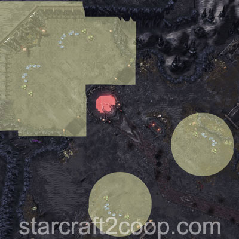
Cradle of Death
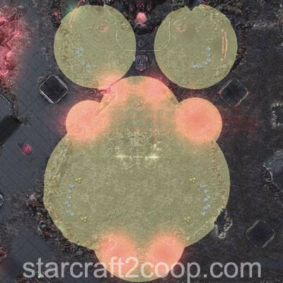
Dead of Night
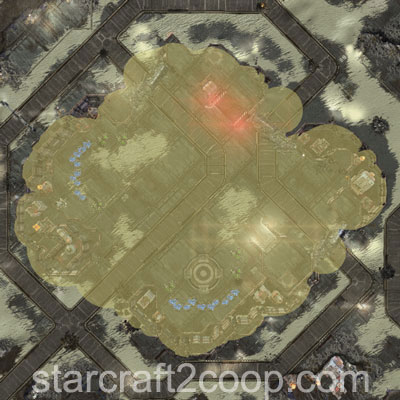
Lock & Load
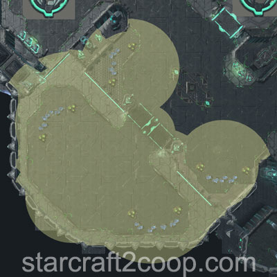
Malwarfare
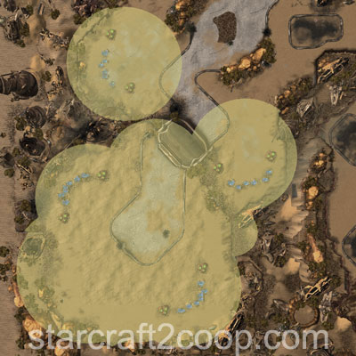
Miner Evacuation
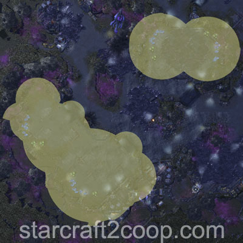
Mist Opportunities
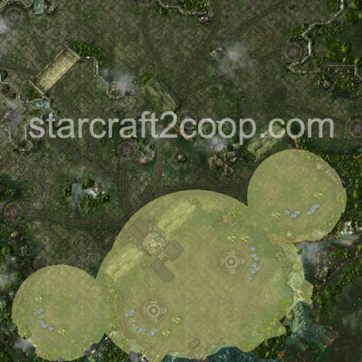
Oblivion Express
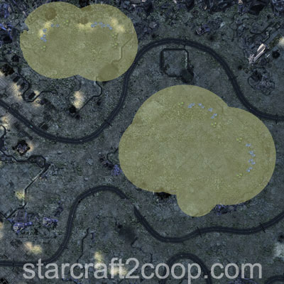
Part and Parcel
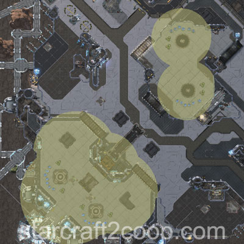
Rifts to Korhal
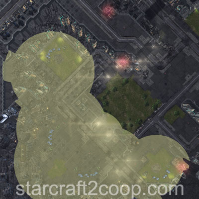
Scythe of Amon
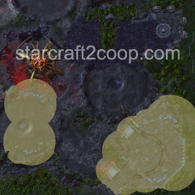
Temple of the Past
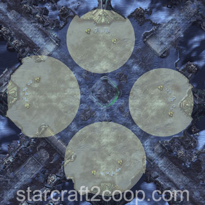
The Vermillion Problem
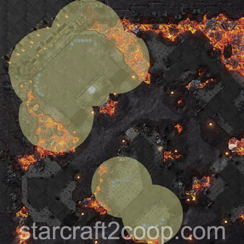
Void Launch
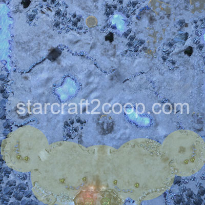
Void Thrashing
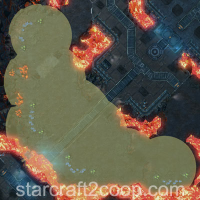
Mutator Interactions
Interactions:
Mutator List
A list of all of Starcraft II Co-op mutators is shown below. Names, icons, descriptions and mechanics of these mutators are listed. Click the "Details" button to display more information on each mutator. For more numeric data on mutators (as well as mutator information for other difficulty levels), please visit Maguro's Blog.
Most mutators also have a certain difficulty score associated with them, called an "Abomination Value". These scores are used for selecting different levels of difficulty levels for Brutal+ games. You can find a list of scores and difficulty level breakpoints on the Brutal+ Page.
You may quickly navigate to a mutator by clicking the links below:
| Icon | Name | Description | Available in Custom? | ||||||||||||||||||||||||||||||||||||||||||||||||||||||||||||||||||||||||||||||||||||||||||||||||||||||||||||||||||||||||||||||||||||||||||||||||||||||||||||||||||||||||||||||||||||||||
|---|---|---|---|---|---|---|---|---|---|---|---|---|---|---|---|---|---|---|---|---|---|---|---|---|---|---|---|---|---|---|---|---|---|---|---|---|---|---|---|---|---|---|---|---|---|---|---|---|---|---|---|---|---|---|---|---|---|---|---|---|---|---|---|---|---|---|---|---|---|---|---|---|---|---|---|---|---|---|---|---|---|---|---|---|---|---|---|---|---|---|---|---|---|---|---|---|---|---|---|---|---|---|---|---|---|---|---|---|---|---|---|---|---|---|---|---|---|---|---|---|---|---|---|---|---|---|---|---|---|---|---|---|---|---|---|---|---|---|---|---|---|---|---|---|---|---|---|---|---|---|---|---|---|---|---|---|---|---|---|---|---|---|---|---|---|---|---|---|---|---|---|---|---|---|---|---|---|---|---|---|---|---|---|---|---|---|---|
| Afraid of the Dark |
Vision provided by all sources is extremely limited except when in view of your camera.
Details Detailed Mutator Information The vision range of Afraid of the Dark is highly reduced. Below is an example of what it looks like: 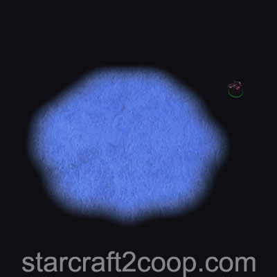 Notice how the Probe lies outside the vision range. This means that it can be attacked and not be able to attack back. Units can only attack if they have vision provided by your camera. Vision Ranges are listed below:
Any units with a Map Boss tag will not be affected by the mutator. These are usually mission-specific units, such as the Artifact Truck on Cradle of Death and Terrazine Harvesters on Mist Opportunities. Attack wave and Objective ping markers will not be shown on the minimap. Commander-specific Tips
|
||||||||||||||||||||||||||||||||||||||||||||||||||||||||||||||||||||||||||||||||||||||||||||||||||||||||||||||||||||||||||||||||||||||||||||||||||||||||||||||||||||||||||||||||||||||||||
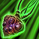 |
Aggressive Deployment | Additional enemy units are periodically deployed onto the battlefield.
Details Detailed Mutator Information Drops will prioritize player units which fulfill particular conditions. These are:
The drop will spawn 7 units away from the potential target. If no potential target is found, the drop will spawn between 25 and 40 units away from the player's base. Drop Pod Details, along with their Strength and Tech levels are shown below. For more information on Strength and Tech levels, check the Enemy Compositions page.
After the 6th wave, Drop Pods will drop every 2:10 and have Tech level 6 and Strength level 5. Commander-specific Tips
|
|||||||||||||||||||||||||||||||||||||||||||||||||||||||||||||||||||||||||||||||||||||||||||||||||||||||||||||||||||||||||||||||||||||||||||||||||||||||||||||||||||||||||||||||||||||||||
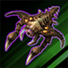 |
Alien Incubation | All enemy units spawn Broodlings upon death.
Details Detailed Mutator Information The number of Broodlings that spawn is equal to the unit's supply cost. If the unit costs no supply, 1 Broodling is spawned. Note that Hybrids take up 8 supply. Broodlings do not have a timed life and will remain on the map indefinitely until killed. Commander-specific Tips
|
|||||||||||||||||||||||||||||||||||||||||||||||||||||||||||||||||||||||||||||||||||||||||||||||||||||||||||||||||||||||||||||||||||||||||||||||||||||||||||||||||||||||||||||||||||||||||
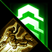 |
Avenger | Enemy units gain increased attack speed, movement speed, armor, life, and life-regeneration when nearby enemy units die.
Details Detailed Mutator Information When a unit dies, it gives out a certain number of Avenger stacks to units within a 1.25 range. The number of stacks equals the unit's supply count. If the unit costs no supply, 1 stack is given. Note that Hybrids take up 8 supply. The total number of Avenger stacks (buffs) a unit can have is 10. These stacks are lost when the unit ownership changes (Mind Control, Domination, etc.). Each Avenger stack provides the following buffs to the unit receiving the stack. Stacks are additive.
Avenger stacks can be transferred to the hybrid on Part & Parcel. On Oblivion Express, the train counts as a whole unit. Therefore, only 8 stacks will be provided. Below are a list of mission-specific unit Avenger stacks given out on unit death. :
Commander-specific Tips
|
|||||||||||||||||||||||||||||||||||||||||||||||||||||||||||||||||||||||||||||||||||||||||||||||||||||||||||||||||||||||||||||||||||||||||||||||||||||||||||||||||||||||||||||||||||||||||
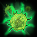 |
Barrier | Enemy units and structures gain a temporary shield upon the first time they take damage.
Details Detailed Mutator Information Barrier triggers when a unit or structure first takes damage. Therefore, you can bypass Barrier by oneshotting a unit. The Barrier buff applies a 5 second shield that absorbs up to 100 damage. Once a unit has received the Barrier buff, it cannot receive it again. Commander-specific Tips
|
|||||||||||||||||||||||||||||||||||||||||||||||||||||||||||||||||||||||||||||||||||||||||||||||||||||||||||||||||||||||||||||||||||||||||||||||||||||||||||||||||||||||||||||||||||||||||
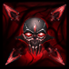 |
Black Death | Some enemy units carry a plague that deals damage over time and spreads to other nearby units. The plague spreads to your units when the enemy unit is killed.
Details Detailed Mutator Information Any enemy unit has a 33% chance of having the Black Death mutator applied to it. This unit can infect up to 3 units within 5 range when it dies. Black Death does 1% of a unit's HP in damage every 0.5 seconds and ignores all shields. Commander-specific Tips
|
|||||||||||||||||||||||||||||||||||||||||||||||||||||||||||||||||||||||||||||||||||||||||||||||||||||||||||||||||||||||||||||||||||||||||||||||||||||||||||||||||||||||||||||||||||||||||
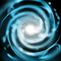 |
Blizzard | Storm clouds move across the map, damaging and freezing player units in their path.
Details Detailed Mutator Information Blizzards slow down unit movement speed to 12% over the span of 5 seconds. It also deals 5 damage per second to all units in its range. The debuff lasts for 2 seconds. Commander-specific Tips
|
|||||||||||||||||||||||||||||||||||||||||||||||||||||||||||||||||||||||||||||||||||||||||||||||||||||||||||||||||||||||||||||||||||||||||||||||||||||||||||||||||||||||||||||||||||||||||
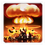 |
Boom Bots | Uncaring automatons carry a nuclear payload toward your base. One player must discern the disarming sequence and the other player must enter it.
Details Detailed Mutator Information The bots will spawn from any enemy building. If you clear all enemy buildings on the map, the bots will stop spawning. Note that all-clearing Malwarfare and Void Launch does not stop them from spawning, because Suppression Towers and Launch Bays are indestructible enemy structures. A Boom Bot is shown below: 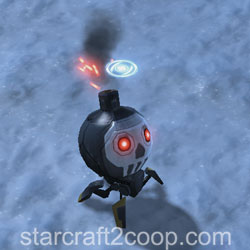 When a Boom Bot spawns, one player will see its code above the unit. The other player will see "?-?-?-?". The player that sees the code must provide the other player with the code, so that they may input it into the Boom Bot. Once a bot is clicked, losing vision does not cause the player to lose the command card and they can still input the code. The Boom Bot starts off with 1.25 Movement Speed. Inputting an incorrect digit will prevent the player from any further input for 8 seconds. Additionally, it increases the Boom Bot speed by 1.0, up to a maximum of 4.75. The spawn timings of the Boom Bots are as follows:
After the 18:50 spawn, 2 Boom Bots will appear every 50 seconds. When a bot reaches a player unit or structure, it will detonate a nuke. The nuke deal a base damage of 750 (950 vs structures) within range 4, 50% of base damage within range 6, and 25% of base damage within range 8 of the center of the nuke. Once a Nuke has been detonated, there is a 4 second cooldown before it can be used again. Bots will not actively attack Aurana's transport and Data Cores on Malwarfare, Terrazine Harvesters on Mist Opportunities, Artifact Trucks on Cradle of Death, and the Evacuation Ships on Miner Evacuation. However, their nukes will cause those units damage. Commander-specific Tips
|
|||||||||||||||||||||||||||||||||||||||||||||||||||||||||||||||||||||||||||||||||||||||||||||||||||||||||||||||||||||||||||||||||||||||||||||||||||||||||||||||||||||||||||||||||||||||||
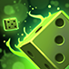 |
Chaos Studios | Mutators are chosen at random and periodically cycle throughout the mission.
Details Detailed Mutator Information The start of the game has three mutators active. At 4:30 one mutator will get cycled out. 15 seconds later, one more gets added. Mutators get replaced every 90 seconds. The list of mutators that can appear is shown below:
From the above list, the following mutators cannot appear in the starting set of three:
Commander-specific Tips
|
|||||||||||||||||||||||||||||||||||||||||||||||||||||||||||||||||||||||||||||||||||||||||||||||||||||||||||||||||||||||||||||||||||||||||||||||||||||||||||||||||||||||||||||||||||||||||
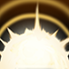 |
Concussive Attacks | Player units are slowed by all enemy attacks.
Details Detailed Mutator Information The debuff reduces movement speed by 50% and lasts 60 seconds to any unit or structure that is damaged by Amon or the Environment. Units with the "Frenzied" buff are immune to Concussive Attacks and cannot be slowed. These include Ultralisks, Brutalisks, Tyrannozors and Tychus' Odin. Commander-specific Tips
|
|||||||||||||||||||||||||||||||||||||||||||||||||||||||||||||||||||||||||||||||||||||||||||||||||||||||||||||||||||||||||||||||||||||||||||||||||||||||||||||||||||||||||||||||||||||||||
| Darkness | Previously explored areas remain blacked out on the minimap while outside of player vision.
Details Detailed Mutator Information Attack wave and Objective ping markers will not be shown on the minimap. Reducing your Shader Settings to Medium quality and below will allow you to see the terrain, nullifying the mutator. Commander-specific Tips
|
||||||||||||||||||||||||||||||||||||||||||||||||||||||||||||||||||||||||||||||||||||||||||||||||||||||||||||||||||||||||||||||||||||||||||||||||||||||||||||||||||||||||||||||||||||||||||
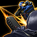 |
Diffusion | Damage dealt to enemies is split evenly across all nearby units, including your own.
Details Detailed Mutator Information 50% of the damage you deal is split equally across all units within 5 range. This effect will only apply if the unit survives damage that is being dealt. Oneshotting a unit will not trigger Diffusion. Commander-specific Tips
|
|||||||||||||||||||||||||||||||||||||||||||||||||||||||||||||||||||||||||||||||||||||||||||||||||||||||||||||||||||||||||||||||||||||||||||||||||||||||||||||||||||||||||||||||||||||||||
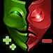 |
Double Edged | Damage dealt by your units and structures is dealt back to them, but then healed back over time.
Details Detailed Mutator Information HP is healed at 1 HP per 0.1 seconds as per the in-game code. However, due to the design of this function, HP is only healed at roughly 8HP per second on average. Only the unit that deals damage gets impacted by Double Edged. For example, Carriers are not affected, but their Interceptors are. Units within transports will be safe from the mutator if they are picked up. Double Edged has an interesting interaction with Life Leech effects on units, such as those from Dehaka's Gene Mutations. Damage that is dealt by Double Edged is also counted towards damage dealt. That is, if a unit deals 100 damage to an enemy unit, it deals 100 damage to itself, and therefore, a total of 200 damage is counted for the Life Leech effect. This results in 40 life heal and 100 life healed over time.
|
|||||||||||||||||||||||||||||||||||||||||||||||||||||||||||||||||||||||||||||||||||||||||||||||||||||||||||||||||||||||||||||||||||||||||||||||||||||||||||||||||||||||||||||||||||||||||
| Eminent Domain | Enemies gain control of your structures after destroying them.
Details Detailed Mutator Information Shields and HP are replenished after the structure is captured. The structure will be destroyed if there's no path to player 1's base. Heroic Structures (with the exception of Swann's Laser Drill) are not stolen by Amon. Structures will only be captured by Amon under the following conditions:
Due to how Siege Tanks work, a sieged up siege tank cannot trigger Eminent Domain on a kill. In any other circumstance, the structure will be destroyed as normal. One loophole in this logic is allowing Terran structures to burn down. A structure burning down will be automatically converted to Amon's ownership, regardless of the unit that dealt damage to the structure, including player units. This allows you to wall of maps against certain compositions as Amon will not attack his own structures. Commander-specific Tips
|
||||||||||||||||||||||||||||||||||||||||||||||||||||||||||||||||||||||||||||||||||||||||||||||||||||||||||||||||||||||||||||||||||||||||||||||||||||||||||||||||||||||||||||||||||||||||||
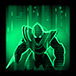 |
Evasive Maneuvers | Enemy units teleport a short distance away upon taking damage.
Details Detailed Mutator Information The enemy unit will teleport within 5 range of the attacking unit if the attacking unit is less than 20 range away. Otherwise, it will teleport within 5 range of its current position. In addition to the teleport, the unit becomes invulnerable for 0.25 seconds. A unit cannot teleport more than once every 2 seconds. Only non-heroic units get the Evasive Maneuvers buff. Commander-specific Tips
|
|||||||||||||||||||||||||||||||||||||||||||||||||||||||||||||||||||||||||||||||||||||||||||||||||||||||||||||||||||||||||||||||||||||||||||||||||||||||||||||||||||||||||||||||||||||||||
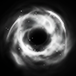 |
Fatal Attraction | When enemy units and structures die, any of your nearby units are pulled to their location.
Details Detailed Mutator Information All player units within 9 range get affected by Fatal Attraction on the death of a unit. This only applies to units which can move. Burrowed Swarm Hosts, Sieged up Siege Tanks, etc. are not affected by Fatal Attraction. The supply cost of a unit determines the strength of the pull as well the length of time the unit is stunned (cannot use attack, use abilities or be moved) as shown below:
Commander-specific Tips
|
|||||||||||||||||||||||||||||||||||||||||||||||||||||||||||||||||||||||||||||||||||||||||||||||||||||||||||||||||||||||||||||||||||||||||||||||||||||||||||||||||||||||||||||||||||||||||
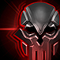 |
Fear | Player units will occasionally stop attacking and run around in fear upon taking damage.
Details Detailed Mutator Information Fear lasts for 10 seconds on non-heroic units and 5 seconds on heroic units. Fear is applied as a chance, depending on a unit's vitality (HP + Shields). It is calculated as a percentage as 2000/Vitality. So, a unit with 20 vitality or lower has 100% chance of getting feared. Commander-specific Tips
|
|||||||||||||||||||||||||||||||||||||||||||||||||||||||||||||||||||||||||||||||||||||||||||||||||||||||||||||||||||||||||||||||||||||||||||||||||||||||||||||||||||||||||||||||||||||||||
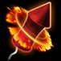 |
Fireworks | Enemies launch a dazzling fireworks display upon death, dealing damage to your nearby units.
Details Detailed Mutator Information When an enemy unit dies, it launches a number of fireworks equal to its supply cost. This will target random player units within a range of 10. However, if no player units are nearby, it will target random locations within a range of 3. Fireworks deal 50 damage each. Commander-specific Tips
|
|||||||||||||||||||||||||||||||||||||||||||||||||||||||||||||||||||||||||||||||||||||||||||||||||||||||||||||||||||||||||||||||||||||||||||||||||||||||||||||||||||||||||||||||||||||||||
| Gift Exchange | Gifts are periodically deployed around the map. If you don't claim them, Amon will!
Details Detailed Mutator Information The first gift spawns at 3:00. Following gifts will spawn after 2:10 intervals until the mission time exceeds 20:00, after which gifts will spawn every 1:40. Gifts only spawn 40 units away from Players 1, 2 and 3 and as long as no units are within 7 range of the intended gift spawn location. Ahead of a gift spawn, an icon will be displayed on the minimap. The player has 40 seconds before it appears and can be captured. Amon will send forces to capture the gift. Gifts take 20 seconds to be captured. If players capture 2 consecutive gifts, Amon will steal the third. Players cannot stop it. The potential rewards for players are:
The potential rewards for Amon are:
Once a gift is available for capture, a small attack force of Amon's units will be created to try and capture the gift. The power level of this attack force is dependent on a number of factors, listed below:
The composition of the attack forces are shown below. For more information on Strength and Tech levels, check the Enemy Compositions page.
One of the most valuable gift rewards (particularly in the early game) for players is Everything is Free. To make advantage of this, ensure you have at least one structure (preferably one that uses minerals and gas) on Rapidfire and use it to spam these structures anywhere, for free. Once the effect wears off, cancel the structures and you will be refunded the original cost of resources for those structures. Commander-specific Tips
|
||||||||||||||||||||||||||||||||||||||||||||||||||||||||||||||||||||||||||||||||||||||||||||||||||||||||||||||||||||||||||||||||||||||||||||||||||||||||||||||||||||||||||||||||||||||||||
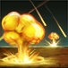 |
Going Nuclear | Nukes are launched at random throughout the map.
Details Detailed Mutator Information Nukes get deployed every 2 seconds (with a marker appearing on the ground) and will always be at least 25 units away from your main and at least 15 units from any resource patch. Nukes will be deploayed within 50 range of a randomly-selected player unit. Nukes deal a base damage of 750 (950 vs structures) within range 4, 50% of base damage within range 6, and 25% of base damage within range 8 of the center of the nuke. Commander-specific Tips
|
|||||||||||||||||||||||||||||||||||||||||||||||||||||||||||||||||||||||||||||||||||||||||||||||||||||||||||||||||||||||||||||||||||||||||||||||||||||||||||||||||||||||||||||||||||||||||
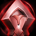 |
Hardened Will | Enemy Heroic units reduce all incoming damage to a maximum of 10 when any non-heroic enemy unit is near them.
Details Detailed Mutator Information Hardened Will checks a distance of 6 units around a Heroic unit's area. If there are any non-heroic units in that area, Hardened Will gets applied. Commander-specific Tips
|
|||||||||||||||||||||||||||||||||||||||||||||||||||||||||||||||||||||||||||||||||||||||||||||||||||||||||||||||||||||||||||||||||||||||||||||||||||||||||||||||||||||||||||||||||||||||||
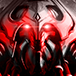 |
Heroes From the Storm | Attack waves will be joined by heroes of increasing power.
Details Detailed Mutator Information Heroes will be added to attack waves as the mission goes on using a "Hero Pool" system which keeps track of how many heroes can spawn. The Hero Pool starts at 1. Every time a hero spawns, the Hero Pool gets reduced by 1. At particular mission times, the current value of the Hero Pool is increased as per the following table: On Dead Of Night, Nydus unloads are regarded as attack wave spawns and will therefore also spawn Amon heroes.
Every 30 seconds past 20:00, the counter goes up by 1. Every attack wave, the Hero Pool will attempt to be depleted and summon the number of heroes in the Hero Pool, subject to the following constraints:
Note that heroes will not spawn at the attack wave spawn location, but at the attack wave gather location. Heroes are spawned in a particular order for the first 9 spawns as follows:
After the 9th spawn, a random hero will be selected from each set of three heroes (1-3, 4-6, 7-9). For example, spawn #10 will contain either Raynor, Tychus or Dehaka. Spawn #11 will contain either Karax, Nova or Zagara, etc. Information on the available heroes is shown below. Artanis 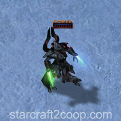 HP/Shields: 2000/2000 Passives:
Abilities:
Dehaka 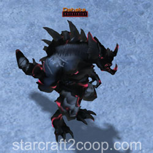 HP: 1500 Passives: None Abilities:
Karax 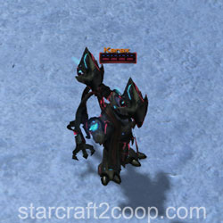 HP/Shields: 750/750 Passives:
Abilities:
Kerrigan HP: 5000 Passives: None Abilities:
Nova HP: 2250 Passives: None Abilities:
Raynor HP: 1000 Passives: None Abilities:
Tychus HP: 1000 Passives:
Abilities:
Zagara HP: 2250 Passives: None Abilities:
Zeratul HP/Shields: 2000/2000 Passives:
Abilities:
Commander-specific Tips
|
|||||||||||||||||||||||||||||||||||||||||||||||||||||||||||||||||||||||||||||||||||||||||||||||||||||||||||||||||||||||||||||||||||||||||||||||||||||||||||||||||||||||||||||||||||||||||
| Inspiration | Enemy Heroic units increase the attack speed and armor of all enemies within a small range.
Details Detailed Mutator Information Inspiration grants an increase of 25% attack speed and 3 armor to all units within 5 range of a Heroic unit. The buff can also be applied to structures and static defense. |
||||||||||||||||||||||||||||||||||||||||||||||||||||||||||||||||||||||||||||||||||||||||||||||||||||||||||||||||||||||||||||||||||||||||||||||||||||||||||||||||||||||||||||||||||||||||||
| Just Die | Enemy units are automatically revived upon death.
Details Detailed Mutator Information A unit that has just died and is being revived by the mutator is stunned (cannot move, attack or use skills) and invulnerable for 1 second. Objectives and bonus objectives that are non-structures will have Just Die! applied, so they will respawn once after killed. Note that units do not respawn. Instead, their HP, shields and energy are reset to full when they take fatal damage for the first time. Commander-specific Tips
|
||||||||||||||||||||||||||||||||||||||||||||||||||||||||||||||||||||||||||||||||||||||||||||||||||||||||||||||||||||||||||||||||||||||||||||||||||||||||||||||||||||||||||||||||||||||||||
| Kill Bots | Waves of bots attack players and are invulnerable to damage until they have killed a set amount of units.
Details Detailed Mutator Information The bots will spawn from any enemy building. If you clear all enemy buildings on the map, the bots will stop spawning. Note that all-clearing Malwarfare and Void Launch does not stop them from spawning, because Suppression Towers and Launch Bays are indestructible enemy structures. There are three types of Kill Bots that will spawn, as follows:
The spawn timings of the Kill Bots are as follows:
After the 25:05 spawn, 4 Kill Bots will appear every 60 seconds. Bots will attack Aurana's transport and Data Cores on Malwarfare, Terrazine Harvesters on Mist Opportunities, Artifact Trucks on Cradle of Death, and the Evacuation Ships on Miner Evacuation. When playing commanders that have Evolution Chambers, use those to feed Kill Bots. When they are destroyed (1 kill), they spawn 6 Broodlings (6 kills). Commander-specific Tips
|
||||||||||||||||||||||||||||||||||||||||||||||||||||||||||||||||||||||||||||||||||||||||||||||||||||||||||||||||||||||||||||||||||||||||||||||||||||||||||||||||||||||||||||||||||||||||||
| Laser Drill | An enemy Drakken laser drill constantly attacks player units within enemy vision.
Details Detailed Mutator Information The drill does damage in three separate phases, depending on the time it is left attacking a certain unit, as shown below:
The drill can be destroyed if players are able to reach it. It has 1000HP, 2000 Shields and 2 armor. However, it will go into repair mode and will take 120 seconds before it starts attacking again. Note that when facing up against Zerg compositions, Creep Tumors provide vision for the Laser Drill. The spawn points of the Laser Drill are shown below:
|
||||||||||||||||||||||||||||||||||||||||||||||||||||||||||||||||||||||||||||||||||||||||||||||||||||||||||||||||||||||||||||||||||||||||||||||||||||||||||||||||||||||||||||||||||||||||||
| Lava Burst | Lava periodically bursts from the ground at random locations and deals damage to player air and ground units.
Details Detailed Mutator Information Lava Bursts appear every 0.5 seconds and will always be at least 25 units away from your main and at least 10 units from any resource patch. Lava Bursts will also not appear directly underneath your structures. Lava Bursts will be marked on the terrain. These markings will last for 4 seconds before they start dealing damage. Lava Bursts deal 5 (+2 vs. Armored) damage per 0.125 seconds (40 DPS) to non-heroic units. The damage phase of the Lava Bursts lasts 16 seconds. Lava Burst damage to Heroic units is based on the unit's maximum HP. This is summarized in the table below:
Commander-specific Tips
|
||||||||||||||||||||||||||||||||||||||||||||||||||||||||||||||||||||||||||||||||||||||||||||||||||||||||||||||||||||||||||||||||||||||||||||||||||||||||||||||||||||||||||||||||||||||||||
| Life Leech | Enemy units steal life or shields whenever they do damage.
Details Detailed Mutator Information Life Leech heals Amon's units for 100% of the damage they do against player units. |
||||||||||||||||||||||||||||||||||||||||||||||||||||||||||||||||||||||||||||||||||||||||||||||||||||||||||||||||||||||||||||||||||||||||||||||||||||||||||||||||||||||||||||||||||||||||||
| Long Range | Enemy units and structures have increased weapon and vision range.
Details Detailed Mutator Information All enemies get +3 to their ranged weapon range and sight range. |
||||||||||||||||||||||||||||||||||||||||||||||||||||||||||||||||||||||||||||||||||||||||||||||||||||||||||||||||||||||||||||||||||||||||||||||||||||||||||||||||||||||||||||||||||||||||||
| Lucky Envelopes | Festive envelopes containing resource pickups are dropped at random throughout the map.
Details Detailed Mutator Information Envelopes either contain 50 gas or 50 minerals for both players and need to be picked up. They can only be picked up by ground units. During the first 3:00, all envelopes will spawn within 30 range of player bases every 7 seconds. After that, envelopes can spawn anywhere on the map every 5.4 seconds. |
||||||||||||||||||||||||||||||||||||||||||||||||||||||||||||||||||||||||||||||||||||||||||||||||||||||||||||||||||||||||||||||||||||||||||||||||||||||||||||||||||||||||||||||||||||||||||
| Mag-nificent | Mag Mines are deployed throughout the map at the start of the mission.
Details Detailed Mutator Information At the start of the game, 200 Mag-mines are placed randomly throughout the map. Mag-mines cannot be placed within 30 range of player start locations or within 5 range of resource patches. The mines will deal 250 damage, after a 2.5-second trigger delay, allowing you to dodge them easily. They trigger without the need for detection. Additionally, there are some other map-specific limitations:
Commander-specific Tips
|
||||||||||||||||||||||||||||||||||||||||||||||||||||||||||||||||||||||||||||||||||||||||||||||||||||||||||||||||||||||||||||||||||||||||||||||||||||||||||||||||||||||||||||||||||||||||||
| Micro Transactions | Giving commands to your units costs resources based on the unit's cost.
Details Detailed Mutator Information Hero units, top bar abilities and Tychus outlaws all cost 10 minerals and 5 gas to issue commands to. The cost of issue a command to a regular unit depends on its actual unit cost and supply cost. For gasless units, the cost is 2 x its supply in minerals. For gas units, it's 1 x its supply in gas and minerals. Note that if you do not have the resources, issuing orders is free. However, if you have no gas, then Micro Transaction mineral cost will be doubled. Costs will only be applied if commands are issued to a unit. Therefore, units following another unit will only incur the initial cost to set them on follow. When that unit moves, no costs will be charged for all units following that unit. If your ally leaves, commands issued to their units will also not be free. |
||||||||||||||||||||||||||||||||||||||||||||||||||||||||||||||||||||||||||||||||||||||||||||||||||||||||||||||||||||||||||||||||||||||||||||||||||||||||||||||||||||||||||||||||||||||||||
| Mineral Shields | Mineral clusters at player bases are periodically encased in a shield which must be destroyed for gathering to continue.
Details Detailed Mutator Information The first set of mineral shields will appear at 2:40. Following mineral shields will appear every 2:00. Each mineral patch has a 15% chance of getting shielded. This percentage goes up by 5% for every round of Mineral Shields. Each Mineral shield has 50HP and lasts for 60 seconds. Mineral shields do not get auto-targeted, so you will need to manually target them to destroy them. Commander-specific Tips
|
||||||||||||||||||||||||||||||||||||||||||||||||||||||||||||||||||||||||||||||||||||||||||||||||||||||||||||||||||||||||||||||||||||||||||||||||||||||||||||||||||||||||||||||||||||||||||
| Minesweeper | Groups of Widow Mines and Spider Mines are buried throughout the battlefield.
Details Detailed Mutator Information At the start of the game, a total of 25 patches of Widow Mines and Spider Mines will be created. Each patch will contain 5 Widow Mines and 7 Spider Mines. The patches cannot be placed within 30 range of player start locations or within 5 range of resource patches or within 8 range of each other. Widow Mines deal direct target damage 250 (+35 vs shields) and splash damage of 80 (+40 vs shields). They have 180HP and will trigger from 5 range. Spider Mines deal a base damage of 250 within range 1.7, 50% of base damage within range 2.25, and 25% of base damage within range 3. They have 25HP and will trigger from 4 range. Since both, Spider Mines and Widow Mines do not attack structures, commanders with movable static defense are great at efficiently clearing mines. Mines will trigger on Aurana's transport on Malwarfare, Terrazine Harvesters on Mist Opportunities, Artifact Trucks on Cradle of Death and the Balius on Part and Parcel. Additionally, there are some other map-specific limitations:
The below image shows an example of a field generated by the mutator. Remember that you will need detection to clear the mines. Commander-specific Tips
|
||||||||||||||||||||||||||||||||||||||||||||||||||||||||||||||||||||||||||||||||||||||||||||||||||||||||||||||||||||||||||||||||||||||||||||||||||||||||||||||||||||||||||||||||||||||||||
| Missile Command | Endless missile bombardments target your structures and must be shot down throughout the mission.
Details Detailed Mutator Information Missiles get launched from the sides of the map. The spawning of the missiles cannot be stopped, but the missiles can be destroyed. There are different types of missiles that will appear. These are shown in the table below:
Depending on the mission time, the spawn rate for the missiles is different as shown in the table below, as well as the percentages for each of the missiles. Note that 2 missiles are fired every spawn cycle, one for each player.
Point Defense Missiles shoot down all Projectile attacks until they run out of energy, but they be shot down/bypassed by Hitscan attacks. The video below explains the difference between the two attack types: Another option would be to simply overwhelm the Point Defense Missiles. Point Defense Missiles will lose energy quickly and cannot shoot down all projectiles if many are being fired at them at the same time. Commander-specific Tips
|
||||||||||||||||||||||||||||||||||||||||||||||||||||||||||||||||||||||||||||||||||||||||||||||||||||||||||||||||||||||||||||||||||||||||||||||||||||||||||||||||||||||||||||||||||||||||||
| Moment of Silence | When a Heroic enemy dies, all player units around it will reflect on their transgressions, leaving them temporarily unable to attack or use abilities.
Details Detailed Mutator Information Moment of Silence is cast within 8 range of the dead unit. It has a 12-second duration. If the hybrid is a Hybrid Nemesis, there is a 2-second delay before the effect is applied. Otherwise, there is a 1-second delay. Commander-specific Tips
|
||||||||||||||||||||||||||||||||||||||||||||||||||||||||||||||||||||||||||||||||||||||||||||||||||||||||||||||||||||||||||||||||||||||||||||||||||||||||||||||||||||||||||||||||||||||||||
| Mutually Assured Destruction | Enemy Hybrid units detonate a Nuke upon death.
Details Detailed Mutator Information All hybrids detonate a nuke. There is a 2-second delay before a nuke detonates if the dead hybrid is a Hybrid Nemesis or a Moebius Hybrid A from Part and Parcel, 1-second delay otherwise. If the hybrid is a Hybrid destroyer, it detonates a small nuke. All other hybrids detonate a large nuke. Nukes deal a base damage of 750 (950 vs structures) within radius #1, 50% of base damage within radius #2, and 25% of base damage within radius #3 as shown in the table below:
|
||||||||||||||||||||||||||||||||||||||||||||||||||||||||||||||||||||||||||||||||||||||||||||||||||||||||||||||||||||||||||||||||||||||||||||||||||||||||||||||||||||||||||||||||||||||||||
| Naughty List | Player units and structures take increased damage for each enemy they've killed.
Details Detailed Mutator Information Each kill adds a damage stack that increases the damage dealt to the unit by a certain amount. The amount of damage increase is based on the number of kills a unit as, as shown in the following table:
When a Hero unit dies, the debuff is not applied until the hero makes a kill, after which the debuff will be applied based on its kill count throughout the entire game. Commander-specific Tips
|
||||||||||||||||||||||||||||||||||||||||||||||||||||||||||||||||||||||||||||||||||||||||||||||||||||||||||||||||||||||||||||||||||||||||||||||||||||||||||||||||||||||||||||||||||||||||||
| Orbital Strike | Enemy Orbital Strikes are periodically fired throughout the map.
Details Detailed Mutator Information Orbital Strikes will be cast every 1:20 seconds from the start of the game. They will be at least 30 units away from your main and at least 15 units from any resource patch. Additionally, they will also not be cast if there are less than 5 viable targets. The number of targets is dependent on the mission time, as shown in the table below:
Orbital Strike will fire in two volleys. Each volley has three shots per target, dealing damage of 50 (100 vs armored). Mission objectives, although not particularly targeted, will take damage from Orbital Strike splash damage. |
||||||||||||||||||||||||||||||||||||||||||||||||||||||||||||||||||||||||||||||||||||||||||||||||||||||||||||||||||||||||||||||||||||||||||||||||||||||||||||||||||||||||||||||||||||||||||
| Outbreak | Continuous waves of the infested horde march against the commanders' bases.
Details Detailed Mutator Information Infested will start spawning from enemy structures starting at 2:00. If you clear all enemy structures, the infested will stop spawning. Infested spawn in random quantities per wave, each wave occurring every 25 seconds. Before 13:20, between 2 to 4 infested will spawn per wave. After that, 4 to 6 infestd will spawn per wave. The type of infested that spawn is dependent on the mission time, as shown in the table below:
Additionally, after 15:00, an Infested Medic will spawn with every spawn of the infested wave. Due to the unique mechanics of Dead of Night that target Infested units, Infested Marines and Aberrations will burn during the day if they have spawned from Infested Structures, even those spawned from this mutator. If they spawn from other Amon structures, they will not burn. On Miner Evacuation, all infested from Outbreak will have double HP. Outbreak can spawn infested from the part boxes on Part and Parcel and can have some unexpected mutator interactions. Only the following mutators interact with the infested that spawn from the part boxes (these infested will appear with a white-colored alliance):
Commander-specific Tips
|
||||||||||||||||||||||||||||||||||||||||||||||||||||||||||||||||||||||||||||||||||||||||||||||||||||||||||||||||||||||||||||||||||||||||||||||||||||||||||||||||||||||||||||||||||||||||||
| Photon Overload | All enemy structures attack nearby hostile units.
Details Detailed Mutator Information It gets cast on any structure that takes damage (shield or life). Deals 20 damage to a single unit within 10 range every 1.25 seconds and lasts for 15 seconds. |
||||||||||||||||||||||||||||||||||||||||||||||||||||||||||||||||||||||||||||||||||||||||||||||||||||||||||||||||||||||||||||||||||||||||||||||||||||||||||||||||||||||||||||||||||||||||||
| Polarity | Each enemy unit is immune to either your units or your ally's units.
Details Detailed Mutator Information Applies to both, units and structures. Units do not take damage, but can be debuffed. Commander-specific Tips
|
||||||||||||||||||||||||||||||||||||||||||||||||||||||||||||||||||||||||||||||||||||||||||||||||||||||||||||||||||||||||||||||||||||||||||||||||||||||||||||||||||||||||||||||||||||||||||
| Power Overwhelming | All enemy units have energy and use random abilities.
Details Detailed Mutator Information At the start of the game, all units start with 50 energy and have an energy regeneration rate of 0.5625. They have a maximum energy of 200. The skills and the energy bar are lost when the unit ownership changes (Mind Control, Domination, etc.). While these units have an energy bar and use it for casts, they draw from a total energy pool for each player. Once this pool is depleted, no skills will be cast, even if the unit has energy. Additionally, if the unit does not have energy, it will not cast a skill, even if the pool has enough energy. Note that this energy bar is an energy bar specifically used as an indicator for Power Overwhelming. It is unaffected by EMP and Feedback. Skills can be cast without detection, so Cloaked units can still be targeted. Depending on the mission time, skills will only be cast once the minimum energy level has been reached. Skills cast are random, but it means there is a chance of higher energy skills being cast as the game progresses. Additionally, there is a regeneration rate, and a maximum energy in the pool. This is shown in the table below:
The list of abilities and other information is listed below:
Commander-specific Tips
|
||||||||||||||||||||||||||||||||||||||||||||||||||||||||||||||||||||||||||||||||||||||||||||||||||||||||||||||||||||||||||||||||||||||||||||||||||||||||||||||||||||||||||||||||||||||||||
| Propagators | Reality warping sludges are crawling towards you. Anything they touch is turned into a copy of the sludge.
Details Detailed Mutator Information Propagators spawn from enemy buildings, so all-clearing a mission will stop them from spawning. Note that all-clearing Malwarfare and Void Launch does not stop them from spawning, because Suppression Towers and Launch Bays are indestructible enemy structures. An additional word of warning: On Temple of the Past, the first Propagator will attack the rocks and convert them to another Propagator, thus forcing players to deal with two Propagators on the first spawn. One way of avoiding this is to destroy the rocks prior to the Propagator spawn. They have 450 HP with 0 armor, are Heroic units and detectors and can attack both, air and ground units within 1 range. They have a movement speed of 1.6. Below is an image of a Propagator. Propagators spawn in waves at different times throughout the mission, as shown in the table below:
After 23:48, Propagators will spawn every 50 seconds in spawns of 5. Propagators can attack all Heroic structures but not commander spawn points, or Zeratul's Artifact Reserve. Swann's Laser Drill, Fenix's Purifier Conclave and Karax's Solar Forge will be destroyed and will start to respawn, with no Propagator Spawning. The other Heroic Structures will be destroyed and will spawn a Propagator. The player will need to rebuild the Heroic Structure manually. The exception to this is Han & Horner's Starport, which cannot be rebuilt if it is destroyed. Propagators do not attack any unit with a MapBoss attribute. Therefore, Propagators will attack Data Cores but not Aurana's Transport on Malwarfare. They do not attack Harvesting Bots on Mist Opportunities, nor Artifact Trucks on Cradle of Death, nor the Evacuation Ships on Miner Evacuation. Propagators can be path-blocked, which can be used to trap them while slower-attacking units kill them off. For more information, watch this video below: Commander-specific Tips
|
||||||||||||||||||||||||||||||||||||||||||||||||||||||||||||||||||||||||||||||||||||||||||||||||||||||||||||||||||||||||||||||||||||||||||||||||||||||||||||||||||||||||||||||||||||||||||
| Purifier Beam | An enemy Purifier Beam moves across the map toward nearby player units.
Details Detailed Mutator Information The Purifier Beam cannot be destroyed. It does a base damage of 10 every 0.25 seconds within 1 radius, 50% of the base damage within 2.2 radius, and 10% of the base damage within 2.8 radius. Purifier Beams will always stay least 20 units away from resource patches. An additional beam will spawn at 10:00 and another one at 20:00. Purifier Beams will always spawn at least 80 units away from Player bases. Players can "distract" a Purifier beam by setting a unit (or a structure if they are playing Terran) on patrol around the beam. The approximate size of the circle that will work for units of any size or any movement speed should be a circle with diameter equal to the vertical visible area on the screen. By having units set in patrol around the Beam, the Beam will end up following that one unit around throughout the course of the game. Note that for Zerg commanders, Overlords may be used, but they will require the Pneumatized Carapace upgrade. Commander-specific Tips
|
||||||||||||||||||||||||||||||||||||||||||||||||||||||||||||||||||||||||||||||||||||||||||||||||||||||||||||||||||||||||||||||||||||||||||||||||||||||||||||||||||||||||||||||||||||||||||
| Random | A mutation is randomly assigned.
Details Detailed Mutator Information Picks a random mutator that is available on the Custom Mutator list, except for Vertigo. |
||||||||||||||||||||||||||||||||||||||||||||||||||||||||||||||||||||||||||||||||||||||||||||||||||||||||||||||||||||||||||||||||||||||||||||||||||||||||||||||||||||||||||||||||||||||||||
| Scorched Earth | Enemy units set the terrain on fire upon death.
Details Detailed Mutator Information Scorched Earth only deals damage to ground units. There are three sizes of scorching areas of effect. This depends on the supply cost of the unit used. This is with exception to the Xel'Naga Construct on Lock & Load, which spawns a large circle. Details of scorching areas are shown below:
|
||||||||||||||||||||||||||||||||||||||||||||||||||||||||||||||||||||||||||||||||||||||||||||||||||||||||||||||||||||||||||||||||||||||||||||||||||||||||||||||||||||||||||||||||||||||||||
| Self Destruction | Enemy units explode and deal damage to friendly player units upon death.
Details Detailed Mutator Information All enemy units explode, dealing damage to player units. The explosion occurs after a 1.75 second delay and deals 20 damage in a 1.5 radius. For units with supply cost 3 or more, the explosion repeats at [supply cost + 1] times. |
||||||||||||||||||||||||||||||||||||||||||||||||||||||||||||||||||||||||||||||||||||||||||||||||||||||||||||||||||||||||||||||||||||||||||||||||||||||||||||||||||||||||||||||||||||||||||
| Sharing is Caring | Supply is shared between you and your partner, and units from both armies contribute to your combined supply cap.
Details |
||||||||||||||||||||||||||||||||||||||||||||||||||||||||||||||||||||||||||||||||||||||||||||||||||||||||||||||||||||||||||||||||||||||||||||||||||||||||||||||||||||||||||||||||||||||||||
| Shortsighted | Player units and structures have reduced vision range.
Details Detailed Mutator Information Reduces all player units sight range by 60%, down to a minimum of 1 range. Units that have 0 range (e.g. Essence or Biomass drops) will have their range increased to 1. Commander-specific Tips
|
||||||||||||||||||||||||||||||||||||||||||||||||||||||||||||||||||||||||||||||||||||||||||||||||||||||||||||||||||||||||||||||||||||||||||||||||||||||||||||||||||||||||||||||||||||||||||
| Slim Pickings | Player worker units gather resources at a reduced rate, but resource pickups spawn throughout the map.
Details Detailed Mutator Information All mineral patches contain a maximum of 1500 minerals per patch. Automated refineries, assimilators, MULEs and workers will all harvest 1 resource per tick/trip. Resource pickups spawn every 5.4 seconds before the 3-minute mark, after which they will spawn every 7 seconds. Each pickup contains either 50 minerals or 50 gas. A spawn will either contain two mineral pickups, or 1 mineral pickup and 1 gas pickup. They can only be picked up by ground units. Every other spawn, a pickup will spawn anywhere on map, while the other will only spawn within 30 range of the starting location. This only occurs before the 3-minute mark, after which pickups will never be limited to spawning at the starting location. |
||||||||||||||||||||||||||||||||||||||||||||||||||||||||||||||||||||||||||||||||||||||||||||||||||||||||||||||||||||||||||||||||||||||||||||||||||||||||||||||||||||||||||||||||||||||||||
| Speed Freaks | The enemy moves faster than any unit a player has at their disposal.
Details Detailed Mutator Information All enemy units have a movement speed of 5.5. |
||||||||||||||||||||||||||||||||||||||||||||||||||||||||||||||||||||||||||||||||||||||||||||||||||||||||||||||||||||||||||||||||||||||||||||||||||||||||||||||||||||||||||||||||||||||||||
| Temporal Field | Enemy Temporal Fields are periodically deployed throughout the map.
Details Detailed Mutator Information Temporal Fields scale time to 1% of the normal speed, reducing all time-based effects in their area of effect. All cloaked units are revealed. This includes cooldowns, regeneration, and attacks. Heroic units' movement speed and attack speed are slowed to 50%. They spawn every 3 seconds and there is a 1 second delay before a Temporal field becomes active. Each field lasts for 20 seconds. Temporal Fields will always be at least 30 units away from the starting locations as well as at least 4 units away from mineral patches.
|
||||||||||||||||||||||||||||||||||||||||||||||||||||||||||||||||||||||||||||||||||||||||||||||||||||||||||||||||||||||||||||||||||||||||||||||||||||||||||||||||||||||||||||||||||||||||||
| Time Warp | Enemy Time Warps are periodically deployed throughout the map.
Details Detailed Mutator Information Time Warps scale time to 33% of the normal speed, reducing all time-based effects in their area of effect. This includes cooldowns, regeneration, timed life and attacks. They spawn every 3 seconds and there is a 2.5 second delay before a Time Warp becomes active. Each field lasts for 30 seconds. Units with the Frenzied passive (such as Brutalisks, the Odin and Ultralisks) will be unaffected. Time Warps will always be at least 25 units away from the starting locations as well as at least 4 units away from mineral patches. |
||||||||||||||||||||||||||||||||||||||||||||||||||||||||||||||||||||||||||||||||||||||||||||||||||||||||||||||||||||||||||||||||||||||||||||||||||||||||||||||||||||||||||||||||||||||||||
| Transmutation | Enemy units have a chance to transform into more powerful units whenever they deal damage.
Details Detailed Mutator Information Every time an enemy unit does damage to a player unit, it has a chance to change to a unit of 1 higher supply that it costs. 0 supply units are counted as 1 supply units. Note that the change is permanent. Therefore, newly Transmutated units will drop higher amounts of Biomass, Essence, etc. than the unit they were previously. Additionally, units that would not drop Biomass (such as units from Void Rifts) will also start to drop Biomass. The chance of Transmutation triggering is calculated as a percentage of damage dealt as Damage/2. So, if a unit does 200 damage, it has a 100% chance of triggering Transmutation. This calculation occurs after damage reduction is calculated in the form of armor/shield damage reduction and damage reduction buffs. If an enemy unit kills a player unit, it jumps a number of tiers equal to the killed unit's supply. If that unit is a heroic, the killing unit instantly jumps to the max tier. Transmuted units also drop Biomass, Essence and Mengsk Royal Guard experience, even if the original unit did not (e.g. from Void Rifts). Tiers are shown below:
Commander-specific Tips
|
||||||||||||||||||||||||||||||||||||||||||||||||||||||||||||||||||||||||||||||||||||||||||||||||||||||||||||||||||||||||||||||||||||||||||||||||||||||||||||||||||||||||||||||||||||||||||
| Trick or Treat | Civilians visit your Candy Bowl looking for treats, which are generated by spending minerals. If no treats are available, the civilians randomly transform into enemy units.
Details Detailed Mutator Information The Candy Bowl can store a maximum of 50 candy. You have to spend 25 minerals to add 1 candy to the bowl. The candy bowl is shown below: Civilians spawn from random enemy structures. If you destroy all enemy structures on the map, they will stop spawning. These civilians will make their way towards your Candy Bowl. Note that all-clearing Malwarfare and Void Launch does not stop them from spawning, because Suppression Towers and Launch Bays are indestructible enemy structures. Civilians spawn every 30 seconds. The number of civilians that spawn depends on the mission time. This is shown below:
If a Civilian walks up to the bowl which has candy, they will take 1 candy and despawn. If there is no candy in the bowl, they will transform into a unit tier as per the mission time. Tiers match that of the Transmutation mutator (see details in the Transmutation mutator details for more information). Additionally, if they cannot make their way to your bowl, they will transform after 5 minutes.
Currently, this mutator is bugged. After 10:00, the tier resets down to Tier 1. Commander-specific Tips
|
||||||||||||||||||||||||||||||||||||||||||||||||||||||||||||||||||||||||||||||||||||||||||||||||||||||||||||||||||||||||||||||||||||||||||||||||||||||||||||||||||||||||||||||||||||||||||
| Turkey Shoot | Supply can only be generated by killing turkeys that wander throughout the map. Doing so may anger the turkeys that remain.
Details Detailed Mutator Information Players start with 50 supply and will need to kill Turkeys on the map in order to raise the supply cap. The max supply will be reduced every variable interval. The interval is based on the supply. Supply drops by 1 every 250/[Supply]. So, at 250 supply, you will lose 1 Supply/per second. If players have more supply than they have available, their units will start taking damage after 3 seconds unless they gather more supply. The player whose units will take damage is the player who is currently using the bigger share of the supply. If they are both using the same supply, a player is randomly picked to take damage. Every second, a random unit from that player will take 20 damage. If the player stays above supply cap, the number of units that take damage is increased by 1 every 3 seconds. Combat units are first to take damage. Once all combat units are taking damage, workers will start to take damage. Initially, 30 turkeys spawn on the map within 7 and 40 range of the player bases. Every 8 seconds, two turkeys will spawn on the map, at least 20 units away from a player's current camera location. When a turkey is killed, any turkey within 10 range will target the player. Each turkey provides 2 supply. A turkey is shown below. Turkeys deal 8 damage (16 vs. Structures) every 1.5 seconds and have 10 HP and 0 armor. On Oblivion ExpressThis mutator occurred on a weekly mutation which was played on Oblivion Express called "Fowl Play". When trains are destroyed, they normally spawn 5 regular turkeys per carriage (either 7 or 13 carriages per train). However, specific train waves would spawn infested turkeys. The details are shown below:
Infested Turkeys do not generate supply when killed. An infested turkey is shown below: Infested Turkeys deal 0 damage (70 vs structures) every 2 seconds and have 150 HP and 1 armor. When the 6th train wave is destroyed, the Turking will spawn. The Turking is shown below: The Turking deal 250 damage (500 vs structures) every 2 seconds and has 6000 HP and 3 armor. It has an ability "Terrifying Gobble" with a 30-second cooldown that fear all player units within 11 range. |
||||||||||||||||||||||||||||||||||||||||||||||||||||||||||||||||||||||||||||||||||||||||||||||||||||||||||||||||||||||||||||||||||||||||||||||||||||||||||||||||||||||||||||||||||||||||||
| Twister | Tornadoes move across the map, damaging and knocking back player units in their path.
Details Detailed Mutator Information The total number of Twisters on the map is based on the map size. It is the (width + height)/19. Each Twister does 25 damage and knocks all units back. Twisters will always be at least 25 units away from the starting locations as well as at least 5 units away from mineral patches. Twisters do not knock back any units with an "Untransportable" tag (such as the trucks on Cradle of Death). Instead, they deal their damage continuously, and can destroy the unit within seconds. |
||||||||||||||||||||||||||||||||||||||||||||||||||||||||||||||||||||||||||||||||||||||||||||||||||||||||||||||||||||||||||||||||||||||||||||||||||||||||||||||||||||||||||||||||||||||||||
| Vertigo | Your camera randomly changes positions.
Details Detailed Mutator Information Every 20 seconds, your camera will change position. |
||||||||||||||||||||||||||||||||||||||||||||||||||||||||||||||||||||||||||||||||||||||||||||||||||||||||||||||||||||||||||||||||||||||||||||||||||||||||||||||||||||||||||||||||||||||||||
| Void Reanimators | Void Reanimators wander the battlefield, bringing your enemies back to life.
Details Detailed Mutator Information Void Reanimators will spawn 10 seconds after the first killed enemy unit from a random enemy building. Following Void Reanimators will spawn every 55 seconds. If you destroy all enemy buildings on the map, no Void Reanimators will spawn. Note that all-clearing Malwarfare and Void Launch does not stop them from spawning, because Suppression Towers and Launch Bays are indestructible enemy structures. Void Reanimators have 200 HP and 200 Shields. They do not have an attack. There can only be a maximum of 4 Void Reanimators on the map. They only resurrect dead enemy units. Below is an image of a Void Reanimator: Void Reanimators will try to revive the closest dead unit to them. They revive dead units at different speeds, depending on their supply cost. This is detailed below:
Only a total of 500 corpses are stored. When the list fills up, the dead unit will replace a random one on the corpse list if the dead unit has a supply cost of 2 or more. Void Reanimators can be path-blocked, preventing them from reaching their targets for resurrection. For more information, watch this video below: On Dead of Night, Infested units that are resurrected will not die to sunlight and will have to be killed by the player. On Miner Evacuation, Void Reanimators will not resurrect any of the Infested units. Commander-specific Tips
|
||||||||||||||||||||||||||||||||||||||||||||||||||||||||||||||||||||||||||||||||||||||||||||||||||||||||||||||||||||||||||||||||||||||||||||||||||||||||||||||||||||||||||||||||||||||||||
| Void Rifts | Void Rifts periodically appear in random locations and spawn enemy units until destroyed.
Details Detailed Mutator Information Void Rifts have 500 HP with 1 armor. They spawn random enemy units as time progresses. An image of a Void Rift is shown below: Before 8:00, the Void Rifts will only spawn between 30 and 80 range away from the players' starting location. After that, they can spawn anywhere on the map. There are also other limitations as to where they will spawn:
The Void Rift spawn timings and number of rifts are shown below:
At this point, 4 Void Rifts will spawn every 1:30. There are two particular timings of interest for Void Rifts:
TrickleTrickle occurs every 24 seconds in Custom Mutator mode and every 12 seconds in Weekly Mutations. The trickle is randomized every time the Void Rift wants to spawn units. It also depends on which mode is being played. This is detailed below:
*This causes the next trickle to occur after 24 seconds instead of 12 seconds. SpawnThe first Spawn wave occurs 30 seconds after the Void Rift has spawned. Subsequent waves will spawn in intervals of 90 seconds each. Only certain units can be spawned from the Void Rifts. These are listed below:
The mission time has a big effect on what can spawn from the Void Rifts. Void Rift spawns are limited by a resource cost. Each spawn will only have a maximum Mineral + Vespene cost, as detailed below:
The mission time also determines what units can spawn. Notice how the list provided earlier is numbered. Void Rifts can only spawn the following units (based on their index) depending on the mission time:
Commander-specific Tips
|
||||||||||||||||||||||||||||||||||||||||||||||||||||||||||||||||||||||||||||||||||||||||||||||||||||||||||||||||||||||||||||||||||||||||||||||||||||||||||||||||||||||||||||||||||||||||||
| Walking Infested | Every enemy unit that commanders destroy will spawn infested terrans. The more life a unit has, the more infested will rise from it's corpse.
Details On Miner Evacuation, all infested from Walking Infested will have double HP. Detailed Mutator Information The number of Infested Terrans that spawn is equal to the unit's supply cost. If the unit costs no supply, 1 Infested Terran is spawned. Note that Hybrids take up 8 supply. Commander-specific Tips
|
||||||||||||||||||||||||||||||||||||||||||||||||||||||||||||||||||||||||||||||||||||||||||||||||||||||||||||||||||||||||||||||||||||||||||||||||||||||||||||||||||||||||||||||||||||||||||
| We Move Unseen | All enemy units are permanently cloaked.
Details Detailed Mutator Information All non-structure units are cloaked, including map objectives. |